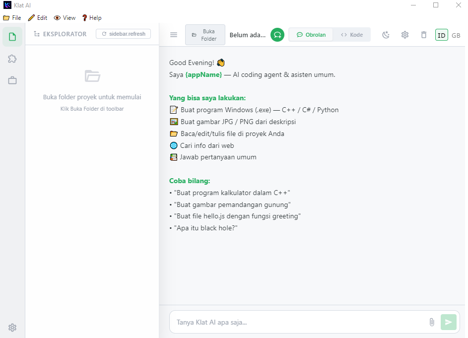

Code Assistant
Intelligent code completion, debugging help, refactoring suggestions, and multi-language support for Python, JavaScript, TypeScript, and more.
Smart AI assistant for coding, image generation, and general Q&A. Supports multiple AI models, code completion, debugging help, creative image generation with prompts, and intelligent answers to any question. Free and unlimited.

Intelligent code completion, debugging help, refactoring suggestions, and multi-language support for Python, JavaScript, TypeScript, and more.
Create stunning images from text prompts with multiple AI models. Support for styles, aspect ratios, and iterative refinement.
Answer questions on any topic - science, history, creative writing, analysis, translation, and more with citations.
Switch between different AI models (GPT, Claude, Llama, local models) based on your needs and privacy requirements.
Run models locally on your device. No data sent to cloud unless you choose cloud models. Full offline capability.
REST API and Python SDK for integrating AI capabilities into your own applications and workflows.
Code generation, debugging, code review, documentation writing, and learning new frameworks.
Blog posts, marketing copy, social media content, creative writing, and translation.
SQL queries, data visualization code, statistical analysis, and insights generation.
Explain complex concepts, practice coding, language learning, and homework assistance.
v1.0.0 • 145 MB
v1.0.0 • 80 MB
Yes! Klat AI is 100% free and open source (MIT license). No subscriptions, no usage limits, no hidden costs. Cloud models require your own API keys.
Absolutely. Download local models (Llama, Mistral, CodeLlama) and use Klat AI completely offline. Perfect for privacy-sensitive work.
All major languages: Python, JavaScript, TypeScript, Go, Rust, C++, Java, C#, PHP, Ruby, Swift, Kotlin, and many more.
Windows installer has auto-update. Linux AppImage updates via AppImageUpdate. Or download latest from GitHub releases.
Yes! Add your OpenAI, Anthropic, or other API keys in Settings to use cloud models alongside local ones.
Only if you use cloud models. Local models run entirely on your machine. No telemetry, no data collection, ever.